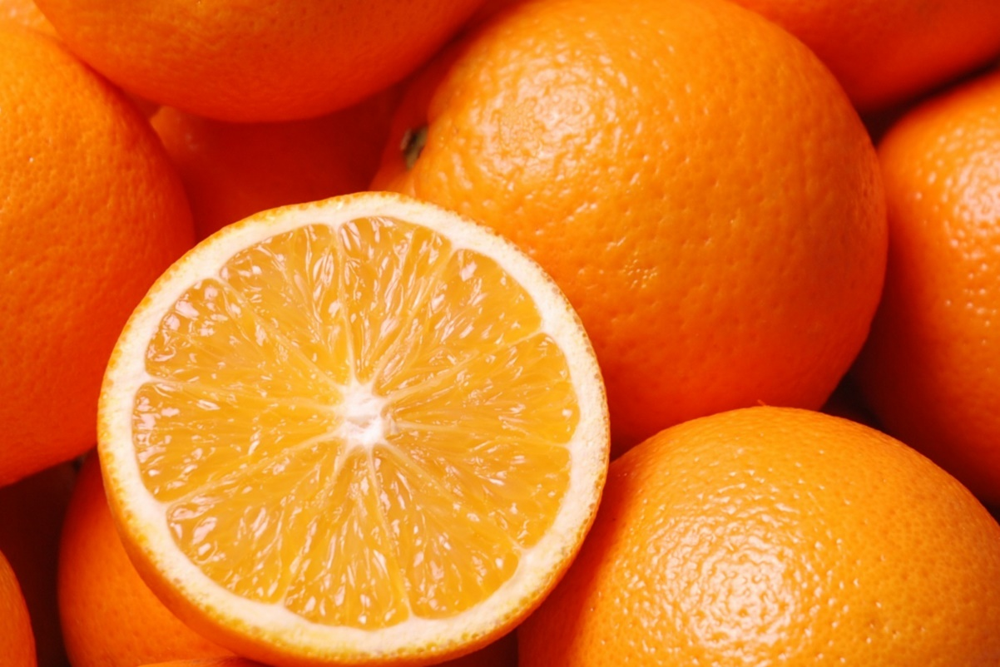
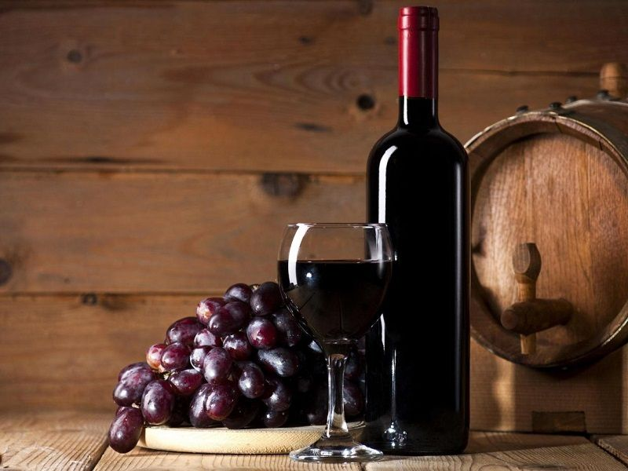
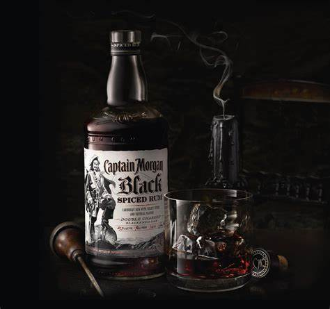
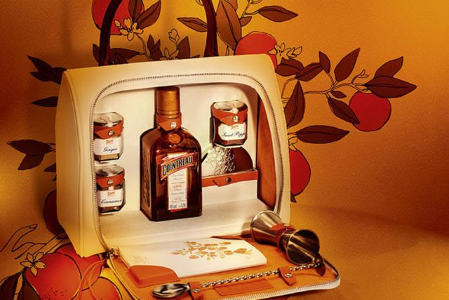
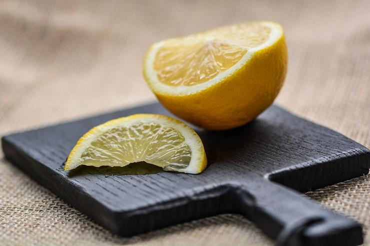
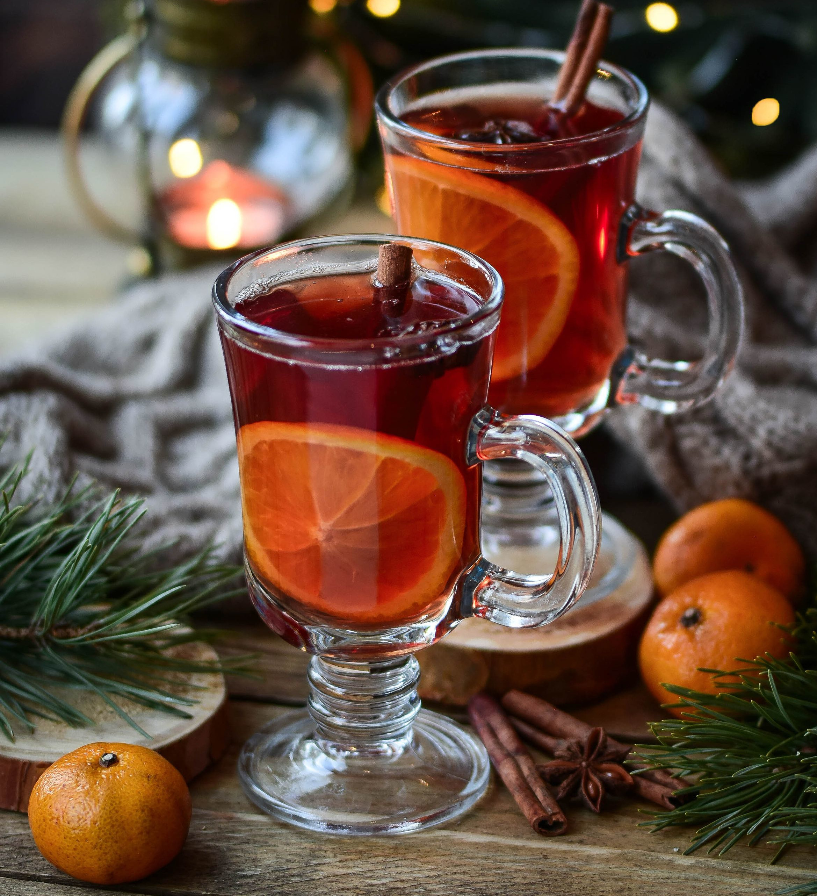

Рецепт глинтвейна
Привет!
А вы знали, что глинтвейн впервые появился в Древнем Риме?
Как указывают источники Википедии*-
Wine was first recorded as spiced and heated in Rome during the 2nd century.
The Romans travelled across Europe, conquering much of it and trading with the rest.
The legions brought wine and viticulture with them up to the Rhine and Danube rivers and to the Scottish border, along with their recipes.
Рецептов существует множество и в каждой стране, городе и доме делают его по-своему.
Я предложу вам классический вариант приготовления. И каждый человек путём наития найдет по вкусу себе напиток.
И так, стандартный рецепт глинтвейна:
- Апельсин вымойте и нарежьте кружочками или тонкими дольками.
В кастрюлю налейте алкоголь (1 бут.) и поставьте её на средний огонь.


- Добавьте к вину апельсин, бутоны гвоздики, 2 палочки корицы, 2 звездочки аниса.
Тщательно перемешать.
- Варите смесь минут 20-30, помешивая лопаткой или ложкой, затем снимите с огня и процедите через сито.
- При желании добавить 0.2 рома, бренди, ликёра или просто лимона.



- Разлейте глинтвейн по стаканам и подавайте, при желании украсив ломтиками цитрусовых.
